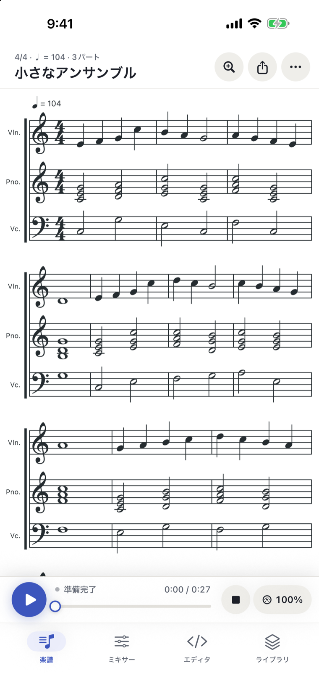

01 / SCORE
譜面を見ながら聴く。
ABCやMusicXMLは五線譜に描画し、LilyPondは内蔵コンパイラが生成したPDFで表示します。ABCの譜面では、音符をタップして再生位置を移動でき、演奏中はハイライトと自動スクロールで位置を追えます。
ABC記譜法、MusicXML、LilyPondの楽譜をiPhoneやiPadで開けます。譜面を見ながら演奏を聴き、練習したいパートの音量を調整したり、楽譜のソースを編集したりできます。

スコアの直感的な確認から、パートごとの反復練習、そして外部アプリへの共有まで。音楽づくりをスマートにする機能を凝縮しました。
ABCやMusicXMLは五線譜に描画し、LilyPondは内蔵コンパイラが生成したPDFで表示します。ABCの譜面では、音符をタップして再生位置を移動でき、演奏中はハイライトと自動スクロールで位置を追えます。
ピアノ、弦楽器、管楽器、ギター、打楽器など78種類の楽器音色に対応。ミキサーで各パートの音量、ミュート、ソロや楽器の配置を調整できます。イヤホンでは音の定位も調整できます。
再生速度は音程を保ったまま50%〜200%まで自在にコントロール。シークや曲全体のループ再生に対応し、バックグラウンド再生やロック画面・コントロールセンターからのリモート操作も万全です。
ファイルやクリップボードから楽譜を読み込み、内蔵エディタでソースを修正できます。診断結果を確認しながら編集し、作業中の曲をライブラリに保存できます。
PDFやPNGはページをプレビューしてから共有できます。楽譜ソースのほか、他の楽譜ソフト向けのMusicXMLやMXL、音楽制作ソフト向けのMIDI、内蔵音源で演奏を生成したWAVを書き出せます。
アカウント登録やログインは一切不要。楽譜の読み込み、表示、編集、演奏の合成、保存まですべてデバイス内（ローカル）で処理します。
アプリには広告、アクセス解析SDK、トラッキング機能は一切含まれていません。